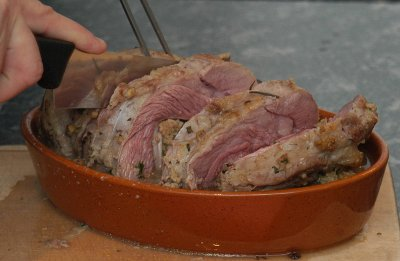

| Zutaten für 4 Portionen: | |
| 1.2 kg | Kalbsbrust |
| Salz, Pfeffer | |
| 4 | Schalotten |
| 100 g | Pilze |
| 2 | Eigelb |
| Zitronenschale | |
| 75 g | Brotkrumen |
| 2 El | fein geschnittene Petersilie |
| 1 El | fein geschnittener Estragon |
| 1/2 El | fein geschnittener Dill |
| 250 g | Kalbshackfleisch |
| 75 g | Butter |
| 4 dl | Bouillon |
Einen Schnitt über die ganze Länge der Kalbsbrust 2 cm von der Kante entfernt machen um eine Tasche zu formen.
Den Ofen auf 200°C vorheizen.
Die Kalbsbrust innen und aussen mit Salz und Pfeffer würzen.
Schalotten fein hacken.
Pilze putzen und fein schneiden.
Die Schalotten und die Pilze in 1/2 Esslöffel Butter anschwitzen und leicht auskühlen lassen.
Die Eigelb mit der Zitronenschale, den Brotkrumen, den Kräutern, den Schalotten und dem Pilzen mit dem Hackfleisch vermischen.
Würzen.
Die Kalbsbrust mit dieser Mischung füllen und zudrücken.
Mit Küchenschnur zunähen.
Ofenform fetten und die Kalbsbrust hineinlegen.
Mit Alufolie bedecken.
In die Mitte des Ofens geben.
Nach 10 Minuten den Ofen auf 150°C zurückdrehen.
75 Minuten rösten.
Alufolie entfernen und Bouillon über das Fleisch giessen.
Weitere 15 Minuten bei 200°C backen.
Ofen ausschalten und das Fleisch 10 Minuten ruhen lassen.
Kalbsbrust aufschneiden.
Mit Salzkartoffeln und kleinen Karotten servieren.
Variationen:
Statt Pilzen fein geschnittene Zwetschgen in der Füllung verwenden.
Einen Schuss Whisky zu den Röstsäften geben.
Broshure from the ESA
Ganz OK aber fettig. Man muss es mögen. Die Füllung gelang sehr fein. RE 20 Feb 2010